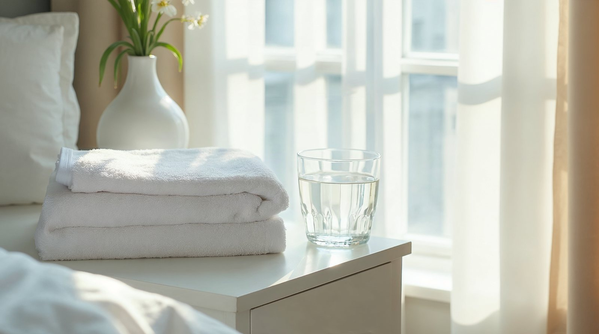
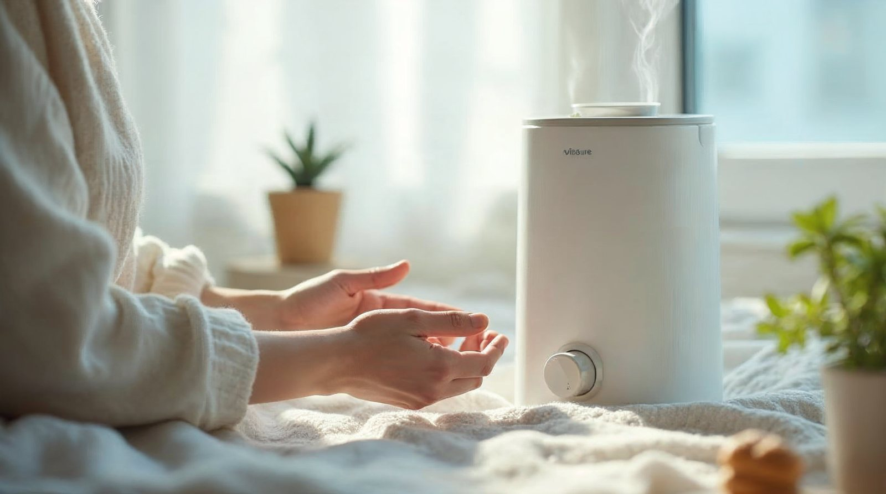

이종호 한의사 감수좋은꿈참사랑한의원 대표원장 (한의사 면허번호 19769)발행 2026-11-26 · 수정 2026-11-26
이 글의 차례
새벽에 아이 방에서 울음소리가 납니다. 불을 켜 보니 베개에 빨간 자국이 번져 있고, 아이는 코를 막은 손이 피범벅이 되어 놀란 얼굴입니다. 휴지를 돌돌 말아 코에 끼우고 고개를 뒤로 젖혀 주는데, 이번 달에만 벌써 세 번째입니다. 부모 마음은 철렁 내려앉습니다.
아이들은 어른보다 코피가 잦습니다. 코 안쪽 점막이 얇고, 콧구멍 앞쪽에 가는 혈관이 모여 있는 자리가 있어서 작은 자극에도 피가 나기 쉽습니다. 다행히 아이 코피의 대부분은 이 앞쪽 혈관에서 나오며, 바르게 누르면 멈추는 경우가 많다고 알려져 있습니다.
그래도 자주 반복되면 걱정이 쌓입니다. 혹시 큰 병은 아닐까, 피가 모자라지는 않을까 하는 마음이 드는 것도 당연합니다. 진료실에서 저는 먼저 코피를 멈추는 방법이 맞는지부터 같이 확인합니다. 그리고 왜 자꾸 나는지, 코 점막을 마르게 하고 긁히게 만드는 일상이 무엇인지를 함께 찾아봅니다.
왜 아이는 코피가 잦을까요
코 안쪽 앞부분, 콧구멍에서 손가락 한 마디쯤 들어간 가운데 벽에는 가는 혈관이 그물처럼 모여 있는 자리가 있습니다. 이곳은 점막이 얇고 바깥 공기와 손가락이 닿기 쉬워서 코피가 가장 자주 나는 자리입니다.
건조한 공기가 가장 흔한 계기입니다. 겨울 난방, 여름 에어컨 바람에 코 점막이 마르면 딱지가 앉고, 그 딱지가 가려워 아이가 코를 파면 다시 상처가 납니다. 마름, 딱지, 긁음, 출혈이 고리처럼 이어지면서 코피가 반복됩니다.
비염도 큰 몫을 합니다. 콧물과 재채기, 코막힘으로 코를 자주 풀고 비비면 점막이 붓고 약해집니다. 코감기를 앓는 동안이나 앓고 난 직후에 코피가 잦아지는 아이도 많습니다. 코에 뿌리는 약을 쓸 때 분사 방향이 코 가운데 벽을 향하면 점막이 더 마를 수 있습니다.
넘어지거나 부딪친 경우, 콧속에 작은 물건을 넣은 경우에도 코피가 날 수 있습니다. 한쪽에서만 냄새 나는 콧물과 코피가 함께 반복된다면 콧속에 무언가 들어 있지 않은지 이비인후과에서 확인해 보는 편이 좋습니다.
한의학에서는 코피를 뉵혈(衄血)이라 부르며, 몸에 열이 많아 위로 오르는 경우와 기운이 약해 피를 잘 붙잡지 못하는 경우를 나눠 살펴 왔습니다. 얼굴이 붉고 더위를 많이 타는 아이와, 얼굴빛이 희고 쉽게 지치는 아이는 같은 코피라도 살필 곳이 다르다는 뜻입니다.
어린아이일수록 코피를 보고 크게 놀라 울면서 코를 비비고, 그 바람에 다시 피가 나는 일도 흔합니다. 부모님이 먼저 침착하게 받아 주는 것이 생각보다 중요합니다. 아이는 부모의 얼굴을 보고 상황을 판단하기 때문입니다.
아이 코피, 이렇게 나눠 봅니다
앞쪽에서 나는 흔한 코피
한쪽 콧구멍에서 피가 흘러나오고, 바르게 누르면 10~15분 안에 멈추는 경우가 대부분입니다. 건조한 계절, 코를 판 뒤, 코감기 뒤에 잦고, 아이 코피의 대부분이 여기에 해당한다고 알려져 있습니다.
자다가 나는 코피
밤에 자는 동안 코피가 나서 베개에 묻어 있는 경우입니다. 방이 건조하거나, 잠결에 코를 비비거나, 입을 벌리고 자며 코가 마르는 아이에게 흔합니다. 침실 습도와 코막힘을 함께 살펴봅니다.
잘 멈추지 않거나 다른 곳에서도 피가 나는 경우
바르게 눌러도 20분 넘게 멈추지 않는 일이 반복되거나, 잇몸에서 피가 잘 나고 작은 충격에도 멍이 잘 드는 아이라면 피가 굳는 힘에 문제가 없는지 소아청소년과에서 혈액 검사를 받아 보시는 편이 좋습니다. 가족 가운데 피가 잘 멈추지 않는 분이 있다면 꼭 알려 주세요.
코피, 이렇게 멈춥니다
코피가 났을 때 가장 흔히 하는 행동이 고개를 뒤로 젖히는 것입니다. 그런데 이렇게 하면 피가 목 뒤로 넘어가 삼키게 되고, 속이 메스껍거나 토할 수 있어 권하지 않습니다.
- 아이를 앉히고 고개를 살짝 앞으로 숙이게 하기
- 엄지와 검지로 콧방울 위 말랑한 부분을 양쪽에서 꽉 잡기
- 시계를 보며 10~15분 동안 중간에 떼지 말고 계속 누르기
- 그동안 입으로 숨 쉬게 하고, 흘러나온 피는 뱉게 하기
- 콧등이나 이마에 차가운 수건을 대 주는 것도 도움이 될 수 있음
중간에 멈췄는지 보려고 자꾸 손을 떼면 다시 피가 납니다. 처음부터 시계를 정해 두고 끝까지 눌러 주세요. 멈춘 뒤에는 몇 시간 동안 코를 세게 풀거나 파지 않게 하고, 뜨거운 목욕과 격한 운동은 그날은 쉬어 가는 편이 좋습니다.
코피가 멈춘 뒤 아이가 피를 많이 삼켰다면 검붉은 것을 토하거나 다음 날 변이 까맣게 나올 수 있습니다. 대개 삼킨 피 때문이니 놀라지 마시고, 진료 때 함께 말씀해 주세요.
휴지를 콧구멍 깊이 쑤셔 넣으면 뺄 때 딱지가 함께 떨어져 다시 피가 날 수 있습니다. 넣더라도 살짝만 넣고, 누르는 것이 중심이라고 기억해 주세요.
스스로 점검해 보세요
아래 가운데 해당하는 줄에 표시해 두셨다가 진료 때 보여 주세요. 진단을 내리려는 목록은 아닙니다.
- 한 달에 몇 번 이상 코피가 난다
- 주로 한쪽 콧구멍에서 난다
- 겨울이나 난방을 켠 뒤 더 잦아졌다
- 코를 자주 파거나 비비는 버릇이 있다
- 아침마다 재채기와 콧물, 코막힘이 있다
- 자면서 입을 벌리고 자거나 코를 곤다
- 잇몸 출혈이나 이유 없는 멍이 잦다

진료실에서 자주 듣는 걱정
"코피가 자주 나면 혈액에 문제가 있는 건 아닐까요?" 하는 걱정을 가장 많이 듣습니다. 대부분은 앞쪽 혈관에서 나는 흔한 코피지만, 잘 멈추지 않거나 멍과 잇몸 출혈이 함께 잦다면 혈액 검사를 받아 보시도록 안내합니다.
"코피가 나면 몸이 약해진 거니 보약을 먹어야 하나요?"라는 질문도 자주 받습니다. 코피가 잦다고 모두 같은 몸은 아닙니다. 열이 많은 아이와 기운이 약한 아이는 챙길 것이 달라서, 진찰 뒤 그 아이에게 맞는 방향을 함께 정합니다.
먼저 이렇게 여쭙니다
진료실에서는 부모님과 아이에게 대략 이런 순서로 여쭙습니다.
- 코피는 한 달에 몇 번쯤, 한 번에 몇 분쯤 나나요?
- 한쪽에서만 나나요, 양쪽에서 번갈아 나나요?
- 주로 낮에 나나요, 자다가 나나요?
- 비염이나 코감기, 코막힘은 어떤가요? 코에 뿌리는 약을 쓰고 있나요?
- 코를 파거나 비비는 버릇이 있나요?
- 잇몸 출혈이나 멍이 잘 드는 편인가요? 가족 중 피가 잘 안 멈추는 분이 있나요?
- 집 안, 특히 아이 방의 습도와 난방은 어떤가요?
- 잠, 땀, 대변, 식사는 어떤가요? 더위를 많이 타는 편인가요?
코피 이야기에 잠과 땀, 대변을 함께 여쭙는 데는 이유가 있습니다. 몸에 열이 많아 땀을 많이 흘리고 변이 단단한 아이와, 쉽게 지치고 입맛이 없는 아이는 생활에서 챙길 것이 다르기 때문입니다.
일상에서 먼저 해 볼 수 있는 것
아이 코피는 코 점막을 촉촉하게 지키고 긁히지 않게 하는 것만으로 줄어드는 경우가 많다고 알려져 있습니다. 아래에서 몇 가지만 골라 2~3주 이어 보세요.
- 아이 방 습도를 40~60% 정도로 맞추고 습도계를 두기
- 잠들기 전 콧구멍 입구에 바셀린이나 보습 연고를 면봉으로 얇게 바르기
- 손톱을 짧게 깎고, 코가 가려우면 파지 말고 말해 달라고 약속하기
- 코는 한쪽씩 살살 풀게 하고, 세게 풀지 않기
- 생리식염수 스프레이로 코 안을 촉촉하게 해 주기
- 물을 자주 마시게 하고, 난방은 너무 덥지 않게 하기
가습기를 쓴다면 물통과 필터를 자주 씻어 주세요. 관리가 어렵다면 젖은 수건을 방에 걸어 두거나 빨래를 실내에 너는 것도 방법입니다. 아이 얼굴에 직접 바람이 닿지 않게 두는 것이 좋습니다.
코를 파는 버릇은 혼내기보다 대신할 행동을 정해 주는 편이 효과적인 경우가 많습니다. 코가 간지러우면 휴지로 콧구멍 입구를 살짝 누르기, 엄마 아빠에게 말하기처럼 아이가 할 수 있는 것을 알려 주세요.
맵고 뜨거운 음식, 기름진 간식을 많이 먹은 날 코피가 잦다는 부모님도 계십니다. 몸에 열이 많은 아이라면 이런 음식을 조금 줄이고, 채소와 과일, 물을 충분히 챙겨 주세요.
독서실이나 학원처럼 난방이 센 곳에 오래 있는 청소년은 독서실 난방 때문에 코가 마르고 코피가 살짝 날 때는 어떻게 살피나요?도 함께 읽어 보세요.

계절마다 챙길 것이 다릅니다
겨울에는 난방으로 공기가 마르고, 바깥의 찬 공기와 실내의 더운 공기를 오가며 코 점막이 쉽게 지칩니다. 아이 방 습도를 매일 확인하고, 외출할 때는 마스크로 코를 감싸 주면 찬 공기가 바로 닿지 않습니다.
봄과 가을 환절기에는 꽃가루와 황사, 큰 일교차로 비염이 심해지며 코피가 따라 잦아집니다. 외출 뒤 손과 얼굴을 씻고 생리식염수로 코를 가볍게 헹궈 주세요. 여름에는 에어컨 바람이 아이 얼굴에 직접 닿지 않게 방향을 돌려 두세요.
아이에게 미리 알려 주세요
코피가 나면 아이는 피를 보고 먼저 놀랍니다. 놀라서 울거나 뛰어다니면 피가 더 날 수 있습니다. 평소에 "코피가 나면 앉아서 고개를 숙이고, 코 말랑한 데를 꽉 잡고, 어른한테 말하기" 세 가지를 놀이처럼 연습해 두세요.
학교나 학원 선생님께도 아이가 코피가 잦다는 것을 알려 두시면, 아이가 혼자 당황하지 않도록 도와주실 수 있습니다. 가방에 작은 휴지와 물티슈를 넣어 두는 것도 도움이 됩니다.
비염이 함께 있다면
코피가 잦은 아이 가운데 많은 아이가 비염을 함께 가지고 있습니다. 콧물과 재채기, 코막힘으로 코를 계속 만지게 되니 코피도 따라 잦아집니다. 이런 아이는 코피만 볼 것이 아니라 비염의 흐름을 함께 살펴야 합니다.
비염으로 코에 뿌리는 약을 쓰고 있다면, 뿌릴 때 노즐을 코 가운데 벽이 아니라 같은 쪽 눈꼬리 방향으로 살짝 향하게 하라고 안내받는 경우가 많습니다. 사용 방법은 처방한 의사나 약사에게 다시 확인해 보세요. 아이 비염은 아이가 아침마다 재채기와 맑은 콧물, 코막힘을 달고 사는 알레르기 비염은 어떻게 살피나요?에 정리해 두었습니다.
코피를 걱정해 아이의 활동을 너무 막을 필요는 없습니다. 바깥 놀이와 운동은 아이의 몸을 튼튼하게 하는 데 중요합니다. 다만 코피가 난 그날은 격한 운동과 뜨거운 목욕을 쉬어 가고, 다음 날부터 평소처럼 지내게 해 주세요.
잠자리 환경도 다시 한번 살펴보세요. 침대가 난방기나 라디에이터 바로 옆에 있다면 조금 떨어뜨리고, 이불은 너무 두껍지 않게 해 아이가 땀을 덜 흘리게 해 주세요. 자고 일어났을 때 콧속이 덜 마른다는 아이가 많습니다.
한의원에서 함께 살필 수 있는 경우
이비인후과나 소아청소년과에서 특별한 원인이 없다고 들었는데 코피가 반복된다면, 한의원에서 몸 전체의 흐름을 함께 살펴보실 수 있습니다.
- 비염과 코막힘이 오래가며 코피도 잦은 경우
- 얼굴이 붉고 더위를 많이 타며 땀과 코피가 잦은 경우
- 쉽게 지치고 입맛이 없으며 얼굴빛이 희고 코피가 반복되는 경우
- 건조한 계절마다 코와 입술, 피부가 함께 마르는 경우
좋은꿈참사랑한의원에 오시면 아이가 편하도록 이야기부터 나눈 뒤 맥과 콧속, 혀와 얼굴빛을 살핍니다. 그다음 한약 상담, 침, 생활 관리 가운데 아이에게 맞는 방법을 부모님과 함께 정합니다.
침이 무서운 아이에게는 억지로 권하지 않습니다. 한약을 상의할 때는 아이의 체중과 소화, 드시는 약을 모두 확인한 뒤 신중하게 정합니다. 어느 정도 이어 갈지는 진찰 뒤 코피 기록의 흐름을 보며 함께 정합니다.
이렇게 기록해 오시면 상담이 쉬워집니다
코피는 갑자기 나서 당황하다 보면 기억이 흐려집니다. 2~4주만 아래처럼 적어 보세요.
- 코피가 난 날짜와 시각(낮인지 자다가인지)
- 한쪽인지 양쪽인지, 멈추기까지 걸린 시간
- 그날 방 습도와 난방, 코를 판 일이 있었는지
- 콧물, 재채기, 코막힘 같은 비염 증상
- 넘어지거나 부딪친 일, 열이 난 일
- 잇몸 출혈이나 멍이 생긴 날
기록을 보면 '난방을 세게 튼 날 밤', '코감기 끝 무렵'처럼 코피가 모이는 자리가 보이기 시작합니다. 그 자리를 알면 미리 챙길 수 있습니다. 코피가 난 베개나 휴지를 사진으로 남겨 오시면 양을 가늠하는 데도 도움이 됩니다.
코피는 보기에 놀랍지만, 바르게 누르고 코를 촉촉하게 지키는 것만으로 잦아드는 아이가 많습니다. 아이에게도 코피가 나면 어떻게 하는지 미리 알려 주면, 다음번엔 덜 놀라고 스스로 대처하게 됩니다. 다음에 오시면 지난번 이후 코피가 어떤 날 났는지부터 여쭙겠습니다.
이런 증상은 먼저 확인이 필요합니다
- 바르게 20분 넘게 눌러도 멈추지 않거나, 피가 많아 아이가 창백하고 어지러워하는 경우
- 머리나 얼굴을 세게 부딪친 뒤 코피가 나거나, 잇몸 출혈과 멍이 함께 잦은 경우
이런 신호가 있으면 한의원보다 가까운 병원이나 응급실을 먼저 찾으세요.
함께 읽으면 좋은 글
- 아이가 아침마다 재채기와 맑은 콧물, 코막힘을 달고 사는 알레르기 비염은 어떻게 살피나요?
- 독서실 난방 때문에 코가 마르고 코피가 살짝 날 때는 어떻게 살피나요?
- 아이가 자면서 코를 골고 입으로 숨 쉴 때는 어떻게 살피나요?
- 아이가 감기에 자주 걸리고 코가 막힐 때는 어떤 점을 살펴보나요?
여쭙는 것
- 코피는 한 달에 몇 번쯤, 한 번에 몇 분쯤 나나요?
- 한쪽에서만 나나요, 양쪽에서 번갈아 나나요?
- 주로 낮에 나나요, 자다가 나나요?
생활에서 해 볼 것
- 아이 방 습도를 40~60% 정도로 맞추고 습도계를 두기
- 잠들기 전 콧구멍 입구에 바셀린이나 보습 연고를 면봉으로 얇게 바르기
- 손톱을 짧게 깎고, 코가 가려우면 파지 말고 말해 달라고 약속하기
한의원에서 함께 살필 것
- 비염과 코막힘이 오래가며 코피도 잦은 경우
- 얼굴이 붉고 더위를 많이 타며 땀과 코피가 잦은 경우
- 쉽게 지치고 입맛이 없으며 얼굴빛이 희고 코피가 반복되는 경우
먼저 확인이 필요한 신호
- 바르게 20분 넘게 눌러도 멈추지 않거나, 피가 많아 아이가 창백하고 어지러워하는 경우
- 머리나 얼굴을 세게 부딪친 뒤 코피가 나거나, 잇몸 출혈과 멍이 함께 잦은 경우
한눈에 보는 표
| 구분 | 핵심 |
|---|---|
| 여쭙는 것 | 코피는 한 달에 몇 번쯤, 한 번에 몇 분쯤 나나요? 한쪽에서만 나나요, 양쪽에서 번갈아 나나요? |
| 생활에서 해 볼 것 | 아이 방 습도를 40~60% 정도로 맞추고 습도계를 두기 잠들기 전 콧구멍 입구에 바셀린이나 보습 연고를 면봉으로 얇게 바르기 |
| 한의원에서 함께 살필 것 | 비염과 코막힘이 오래가며 코피도 잦은 경우 얼굴이 붉고 더위를 많이 타며 땀과 코피가 잦은 경우 |
| 먼저 확인이 필요한 신호 | 바르게 20분 넘게 눌러도 멈추지 않거나, 피가 많아 아이가 창백하고 어지러워하는 경우 머리나 얼굴을 세게 부딪친 뒤 코피가 나거나, 잇몸 출혈과 멍이 함께 잦은 경우 |
자주 묻는 질문
코피가 나면 고개를 뒤로 젖히는 게 맞나요?
고개를 뒤로 젖히면 피가 목으로 넘어가 삼키게 되어 권하지 않습니다. 고개를 살짝 앞으로 숙이고 콧방울 위 말랑한 부분을 10~15분 동안 꽉 눌러 주세요.
코피가 자주 나면 피가 부족해지지 않나요?
앞쪽에서 나는 흔한 코피는 양이 많지 않은 경우가 대부분입니다. 다만 아이가 창백하고 쉽게 지치거나 코피 양이 많다면 소아청소년과에서 빈혈 검사를 받아 보세요.
바셀린을 코에 발라도 괜찮나요?
콧구멍 입구에 면봉으로 얇게 바르는 것은 점막이 마르지 않게 돕는 흔한 방법입니다. 콧속 깊이 넣지는 마세요.
코피가 잦은 아이도 한약을 먹을 수 있나요?
아이의 체중과 소화, 비염 증상, 드시는 약을 확인한 뒤 신중하게 정합니다. 이비인후과나 소아청소년과 진료를 받았다면 그 결과도 함께 알려 주세요.
크면 코피가 줄어드나요?
코 점막이 튼튼해지며 사춘기 무렵 줄어드는 아이가 많다고 알려져 있지만 사람마다 다릅니다. 그때까지는 습도와 코 점막 관리를 꾸준히 챙겨 주세요.
좋은꿈참사랑한의원은 재진 때 지난번 이야기부터 이어서 여쭙니다. 진료시간과 예약은 오시는 길에서 확인하세요.
어디서 상담받을 수 있나요?
좋은꿈참사랑한의원은 서울 동작구 만양로2길 2 신성빌딩 3층·5층(서울 동작구 상도동, 7호선 상도역 3번 출구 근처)에 있습니다. 한의사 3명(이종호 대표원장, 조영기 수석진료원장, 정원영 진료원장)이 진료합니다. 진료시간은 평일 09:30~20:00(점심 13:00~14:00), 토·일·공휴일 09:30~15:00이며, 방문 전 전화로 확인을 권합니다. 예약은 네이버 예약, 카카오톡 상담, 전화 02-815-7510로 받습니다.
이 글은 일반적인 건강 정보이며 개인의 진단이나 치료를 대신하지 않습니다. 증상이 있거나 복용 중인 약이 있다면 진료를 통해 확인하세요. 치료 효과는 개인마다 다를 수 있습니다.
작성 기준: 일반적으로 알려져 있는 건강 정보를 참고해 정리했습니다(대표원장 감수). 증상 기록은 1~2주 동안 하루 1회, 비슷한 시간에 적어 오시면 지난 상태와 비교하기 쉽습니다.